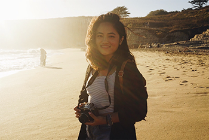

Hello! This is a page about previous works and projects I have taken on. Feel free to browse around!
Hello! This is a page about previous works and projects I have taken on. Feel free to browse around!
Please feel free to contact me!
lindathaovitran@gmail.com LinkedInDevelop a social awareness campaign and present a proposal with research, strategy, and material required to fully execute the campaign.
Group Members: Aliana Garcia, Linh Quan & Linda Tran
#itsaight seeks to address the anxiety of growing up and entering adulthood in the millennial generation. It’s purpose is to reassure and inspire personal growth and exploration in one’s future and to dissolve stigmas around the learning process towards adult responsibilities.
The challenge is to flip the negative connotations of “adulting” and to fuel a positive conversation centered around self confidence and the journey to personal success and fulfillment. Adulthood is no longer a linear path with tangible goals of owning a conventional job, a home, and a family.
Essentially, #itsaight to be figuring the details out on the path to pursuing your passions.


Redesign Paul Rand's "Design & the Play Instict" using all existing text and images into a cohesive book. Consider how to present the information in a sequence of pages
My take on the redesign of Paul Rand's Design & the Play Instinct focused on a variation of the primary colors to give it an identity reminiscent of Rand himself. The title cover features a cut out in the shape of a quote bubble revealing the book title on the page underneath. Inside, each page incorporates the images from the original text in a way to set up and play with the layout. I also designed and implemented a grid system to help tie the different page designs together. I wanted to rely solely on existing content rather than adding new elements as a way to exercise my own play instinct.
A kinetic typographic video balancing type, motion and images illustrating a radio show from the early to mid 20th century.
This is a visualization of a radio broadcast about World War II. The audio clip narrates thoughts and perceptions of the war going from themes of fear to hope in the eventual defeat of the enemy.
The development of poster design during this period had become very stylistic with a flatter graphic look. Color palettes were limited to fewer colors especially in German propaganda posters. The mood would be darker but I wanted to slightly lift it to a faster bolder look through textures and movement. A main focus on one or two colors highlight important shifts. I want to incorporate black tactfully so that sharp outlines and shadows can be animated on their own and add drama.
SocialCue addresses the relationship of Peace & Technology, specifically in regards to intercultural dialogue. It is a pen pal app focused on facilitating deeper and more meaningful conversations between strangers with the goal of promoting cultural understanding and acceptance.
Users will be paired with random strangers from all over the world and encouraged to talk about a wide range of subjects. Messaging will be mediated and guided with prompts and daily goals to reduce any anxiety or pressure associated with starting conversations with a stranger.The end result would form positive first hand experiences with people and cultures different from your own. It provides the ability to “walk in a stranger’s shoes” at your fingertips. A solution to animosity begins with communication and a larger perspective.


Design a website for an existing or nonexistent nonprofit of your choice.
The website was designed to test how to design a call to action that would be most effective for the target audience. I created three different mockups that featured a fairly similar look and mood, experimenting with placement and visuals.

Design a responsive website without using javascript.
The website was designed as a publication site focused on art and design. The site features many images and articles. This exercise was meant to test how to design a website fit for many screen widths.
Desktop
Tablet
Mobile
Create a 30-45 second animated infographic on the topic of sustainability. The animation must balance the use of kinetic typography with the use of graphics.
The topic of sustainability and environmental awareness that I choose was on the Dakota Access Pipeline. This was a current event that involved a lot of news coverage involving the protests and the fight between the community and the pipeline. My goal was to educate viewers on the environmental impacts of the pipeline rather than focusing on the fights. It is important for the audience to understand the reason behind the protests and the background to help formulate their own opinion and stance on the Dakota Access Pipeline.
A “Baby” Big Night is a charity event that the Campus Rotaract Club of Davis hosts each year to fundraise money for their annual project called Baby Packs. The purpose of the dinner and project to to send care packages to mothers in Jaragua, Brazil with the necessitates to care for their newborn infant. This year is the fourth annual dinner the club has hosted with its first charity dinner in 2013.
I have been working with the Campus Rotaract Club of Davis every year for this project, with this being my third year designing for the event. The design committee consisted of approximately 8 individuals who collaborated to come up with a concept and theme for the dinner as well as the physical and digital design. This year we wanted decided on the theme of wonderland with spring like colors and a more whimsical mood. My main role was to interpret the concept and design all digital forms from posters, banners, tickets, and program.
A “Baby” Big Night is a charity event that the Campus Rotaract Club of Davis hosts each year to fundraise money for their annual project called Baby Packs. The purpose of the dinner and project to to send care packages to mothers in Jaragua, Brazil with the necessitates to care for their newborn infant. This year is the third annual dinner the club has hosted with its first charity dinner in 2013.
Being on the design committee for this event for the second year in my career as a Co-Director of Finance I was given the opportunity to conceptualize and design for the event. I was mainly in charge of the graphic aspects of the events, creating the poster, banner, ticket, and program. I worked in a planning team of four total.
A “Baby” Big Night is a charity event that the Campus Rotaract Club of Davis hosts each year to fundraise money for their annual project called Baby Packs. The purpose of the dinner and project to to send care packages to mothers in Jaragua, Brazil with the necessitates to care for their newborn infant. This year is the second annual dinner the club has hosted with its first charity dinner in 2013.
As the then current Finance co-director in the club, I entered the design committee which was in charge of both the graphic and physical decorations. Displayed below are my contributions to the graphic aspect of the event.
The Davis Pathfinder project aims to provide new signtypes around the city of Davis that will improve wayfinding for pedestrians and cyclists.
Group Members: Linh Quan & Linda Tran
The concept revovles around the different districts of Davis: Central Davis, North Davis, South Davis, East Davis, West Davis, Downtown Davis, and UC Davis. Using color has a main component in differentiation and wayfinding, the sign types change depending on the district the audience is in. The idea is to make it as clear as possible to the audience where they are and for them to identify where they need to go at a quick glance.
Hello, hello, Enjoy this obnoxious color. I'm testing a loading page.